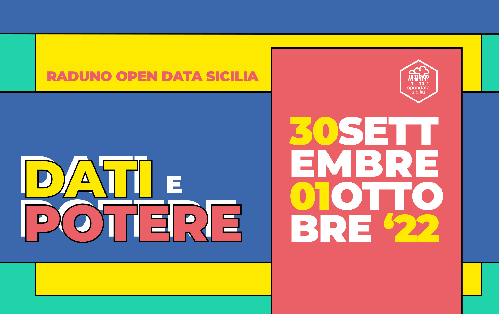

Cos'è
Il raduno Open Data Sicilia del 2022 ha come obiettivo quello di fare emergere il valore dei
dati. Spesso il motore delle idee e dei progetti che hanno a che fare con i dati, che le nostre
comunità portano avanti, è la constatazione che qualcosa - in questo contesto - non funzioni bene o per nulla. È certamente un
meccanismo utile, che aiuta a cambiare le cose, che spinge a non demordere, ma che con il passare del tempo
restituisce la sensazione di un sistema che non evolve.
In questo raduno 2022, invece, vogliamo partire dai dati come fonte di conoscenza, curiosità,
entusiasmo.

Vogliamo partire dai dati e dal loro valore
- valore informativo / decisionale / democratico (basti pensare al potere dei dati aperti in tempi critici come quelli di una pandemia mondiale);
- valore economico (open innovation non è solo una buzzword);
- valore educativo e ricreativo (perché, diciamolo pure, i dati sono anche e soprattutto divertenti).
Se hai un'idea sui dati aperti, se vuoi scoprire un progetto a cui dare un contributo, imparare a
visualizzarli, trasformarli o analizzarli, partecipa.
La partecipazione è un valore fondamentale della nostra comunità; indipendentemente dalle tue competenze o
dai tuoi interessi, se ti iscrivi, se invii una proposta di intervento, ci aiuterai a crescere e "stare bene
sul pezzo".
Chi siamo
Raduno Open Data Sicilia 2022
#OpenDataSicilia è una
iniziativa civica che si propone di far conoscere e diffondere la cultura dell’open government e le prassi
dell’open data e aprire una discussione pubblica partecipata.